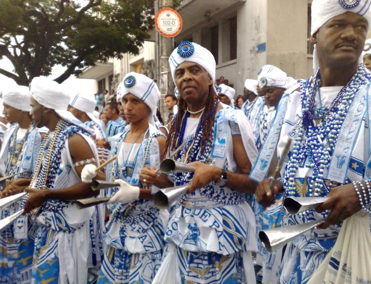
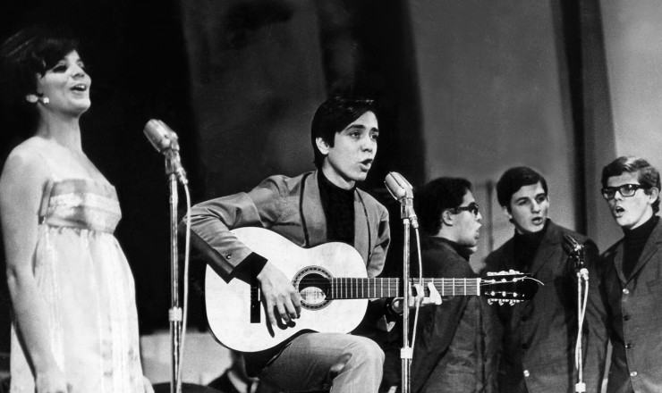
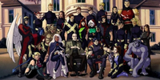
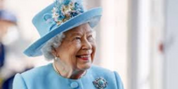

ABCNEWS
Tropicalismo
O Tropicalismo foi um movimento brasileiro de ruptura cultural que, na música, tem como marco o lançamento, em 1968, do disco Tropicália ou Panis et Circencis. Seus participantes foram os cantores-compositores Caetano Veloso, Gilberto Gil e Tom Zé, a cantora Gal Costa, a banda Os Mutantes e o maestro Rogério Duprat. A cantora Nara Leão e os letristas José Carlos Capinan e Torquato Neto completaram o grupo, que teve também o artista gráfico, compositor e poeta Rogério Duarte como um de seus principais mentore...
Músicas do movimento tropicália

"Tropicália" (1968), de Caetano Veloso
"Alegria, Alegria" (1967), de Caetano Veloso
"Atrás do Trio Elétrico", de Caetano Veloso
"É proibido proibir" (1968) (1968), de Caetano Veloso
"Domingo no Parque" (1967), de Gilberto Gil
"Aquele abraço" (1968), de Gilberto Gil;
"São Paulo, meu amor" (1968), de Tom Zé
"Parque Industrial" (1968), de Tom Zé
"Não identificado" (1969), de Gal Costa
"Mamãe, coragem" (1968), de Gal Costa
"Baby" (1968), de Gal Costa;
"Tropicália ou Panis et Circenses" (1968), dos Mutantes
"Miserere Nobis" (1968), dos Mutantes
"Bat Macumba" (1968), dos Mutantes
"Minha Menina" (1968), dos Mutantes
↩ Gilberto Gil, participante do Tropicalismo, desfila no afoxé Filhos de Gandhi
-----------------------------------------------------------------------------------------------------------------------------------------------------------------------------------------------------------------------------
Festivais de Música Popular brasileira
Os festivais tiveram fundamental importância para a popularização da MPB. Na
década de 60 vários eventos foram realizados em estádios, programas de televisão,
teatros, consagrando artistas e consolidando o ritmo, e também eram extremamente
oportunos para as gravadoras na busca de novos artistas para seus próximos álbuns.

Na década de 60, a TV Record era uma emissora de grande referência nacional, quando se falava em música. Na época, tinha programas de muito sucesso
apresentado por Elis Regina, Jair Rodrigues e Roberto Carlos, e de um modo geral estes programas atraíam o público estudantil altamente politizado.
No ano de 1967, o festival de música popular da TV Record havia se transformado no maior evento da mídia nacional.
Segundo dados do IBOPE, 47, 3% dos espectadores de São Paulo assistiram à Transmissão das finais, realizadas no Teatro Paramount em 21 de outubro.
Foi por meio desse evento que, em 1967, na terceira edição, Caetano Veloso, Gilberto Gil e Os Mutantes abalaram a tradição da música brasileira.
Trazendo novos elementos às canções, os artistas apresentaram no Festival, respectivamente, “Alegria, alegria” e “Domingo no Parque” – interpretada mutuamente
por Gil e Os Mutantes.
-----------------------------------------------------------------------------------------------------------------------------------------------------------------------------------------------------------------------------
🚨!ÚLTIMAS NOTÍCIAS!🚨

uma banda brasileira de rock psicodélico formada
durante o Movimento Tropicalista no ano de 1966,
em São Paulo, por Arnaldo Baptista, Rita Lee e Sérgio Dias. CONFIRA! OS MUTANTES
-----------------------------------------------------------------------------------------------------------------------------------------------------------------------------------------------------------------------------

ENTENDA O CASO DA RAINHA QUE NUNCA MORRE! RAINHA ELIZABETH